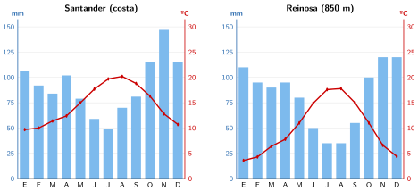
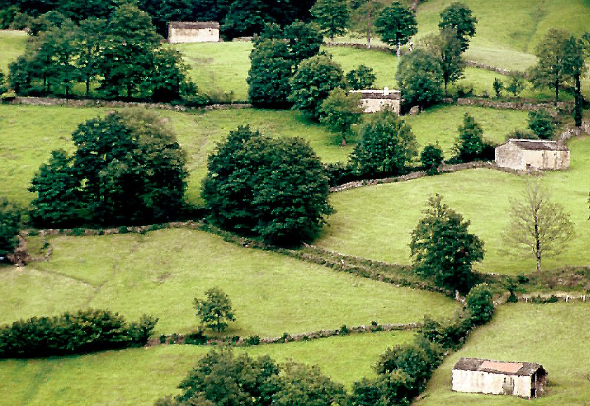
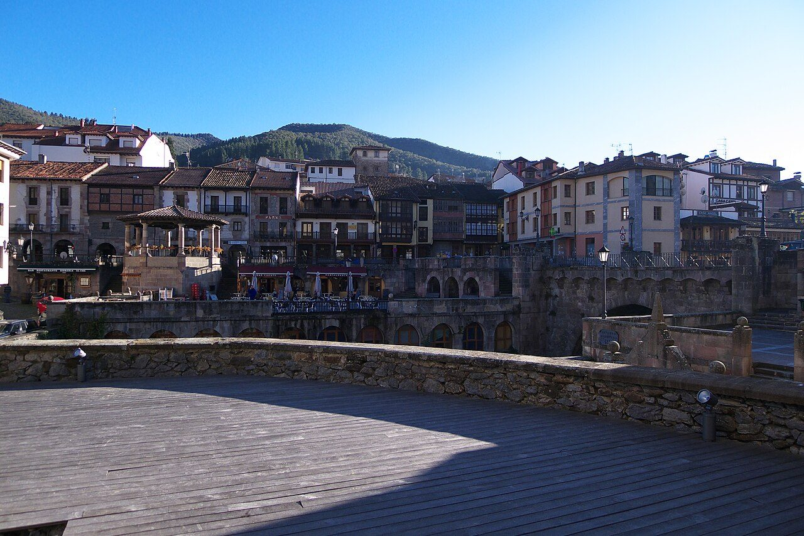

Clima y paisajes de Cantabria
Criterios: PN 1.1, PN 6.1
🤔 Pienso5 min
Qué hago aquí: Piensa un momento y contesta con lo que ya sabes. No pasa nada si no lo sabes: es para empezar.
Cuando alguien de fuera piensa en Cantabria, suele decir: «Allí siempre llueve y todo es verde». ¿Es verdad? ¿Qué tiene que ver la lluvia con el verde?
📖 Leo y aprendo20 min
Qué hago aquí: Lee despacio, mira los dibujos y los ejemplos, y quédate con la idea clave del final.
El clima de casi toda Cantabria es oceánico: llueve mucho y repartido en todo el año, y las temperaturas son suaves: inviernos poco fríos y veranos frescos. El mar actúa como un termostato: se calienta y se enfría despacio, y suaviza las temperaturas de la costa.
Para ver cómo es el clima de un lugar usamos un climograma: las barras azules son la lluvia (en milímetros) y la línea roja, la temperatura (en grados).

costa y valles: lluvia todo el año, suave
Campoo y cumbres: inviernos fríos, nieve
protegida por las montañas: más seca y soleada
El clima explica los paisajes: prados verdes y bosques en la costa y los valles; puertos de montaña con nieve en invierno en Campoo; y en Liébana, rodeada de montañas que frenan las nubes, encinas, alcornoques, viñas y huertos, como en el sur.

Foto: LBM1948 · CC BY-SA 4.0 · Valles Pasiegos 1998 06.jpg

Foto: José Luis Filpo Cabana · CC BY 3.0 · El Valle de Liébana. Potes.jpg
✏️ Hago20 min
Qué hago aquí: Haz las actividades en orden. Empieza siempre por las básicas.
Explica qué significa que el mar actúa como un termostato y qué consecuencias tiene en los inviernos y los veranos de la costa.
Lee el climograma de Santander y anota: mes más cálido y más frío, amplitud térmica (haz la resta), mes más lluvioso y mes más seco. ¿Hay algún mes seco de verdad?
Compara los dos climogramas: calcula la amplitud térmica de Reinosa y compárala con la de Santander. ¿Cuál es mayor? ¿Qué factor explica la diferencia: la altitud, la distancia al mar o los dos?
Relaciona clima y paisaje en tres lugares: la costa, Campoo y Liébana. Para cada uno, escribe el clima, una planta o cultivo típico y un uso del suelo.
La temperatura baja unos 0,6 ºC por cada 100 m de altura. Reinosa está a 850 m y Santander casi al nivel del mar. Calcula cuántos grados menos debería tener Reinosa solo por la altura. Compara el resultado con la diferencia real de enero de los climogramas. ¿Coincide? ¿Qué otra causa puede añadir frío?
Explica, con un dibujo de una montaña con nubes, por qué Liébana es más seca que la costa (sombra pluviométrica). Después explica por qué el viento sur llega a Santander cálido y seco después de cruzar la cordillera.
✏️ Puedes responder escribiendo, con un dibujo o un esquema, o contándolo en voz alta.
Vuelve a la situación de partida. Escribe un mensaje para unos alumnos de Valencia que vienen en noviembre: usa al menos tres datos de los climogramas para explicarles qué tiempo encontrarán y qué deben traer.
🚀 Amplío (si quieres saber más)
Qué hago aquí: ¿Has terminado? Lee la curiosidad o elige el reto. Es voluntario.
Durante dos semanas, apunta cada día la temperatura máxima y mínima y si ha llovido en tu pueblo (con un termómetro o la web de AEMET). Calcula la media de tus datos y compárala con la del climograma para ese mes. ¿Por qué no tienen por qué coincidir? Explica la diferencia entre tiempo y clima.
✅ Compruebo5 min
Qué hago aquí: Contesta sin mirar la ficha y marca cómo lo llevas.